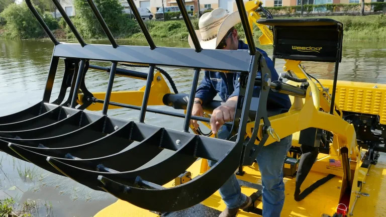

Submerged Aquatic Weeds
Mechanically cut and collect excessive underwater vegetation affecting access and open water.

Home / Services / Pond weed removal
Remove unwanted weeds, lily pads, cattails, algae, and other floating vegetation from shallow areas of the pond. Our compact work boat mechanically cuts, collects, and removes excessive growth without the need for herbicide application.
What It Gives You Back
Clear excessive growth from shorelines, docks, fishing spots, and other frequently used areas.
Focus removal on the parts of the pond where vegetation is creating the greatest disruption.
Collect cut vegetation and floating growth rather than leaving it in the water.
Use compact equipment designed for smaller, shallower waterbodies where full-size harvesters may be unsuitable.
What We Handle
Different pond problems require different tools. Our workboat uses five quick-change attachments to manage submerged, rooted, emergent, and floating growth.
Mechanically cut and collect excessive underwater vegetation affecting access and open water.

Remove dense lily pad growth from selected shorelines, fishing areas, and other high-use parts of the pond.

Use the root rake’s 2-foot steel fingers to remove cattails, emergent shoreline vegetation, underwater rocks, and other debris where conditions allow.

Collect surface algae and small floating particles using the skimmer attachment.

Mechanical removal can target invasive plants such as Eurasian watermilfoil, hydrilla, water chestnut, and phragmites before dense growth restricts access, navigation, and recreation.
Not sure what is growing? Tell us what you are seeing and include a clear photo if available. We will help identify the vegetation and recommend the appropriate next step. Find the Right Removal Approach
The Equipment
Ponds can contain several types of vegetation in a relatively small area. We utilize interchangeable attachments to tailor our removal approach to the specific vegetation present.

Cuts submerged aquatic vegetation up to 5 feet below the surface.
Scoops and removes vegetation from depths up to 3 feet.
Clears shoreline growth, underwater rocks, and debris with 2-foot steel fingers.
Collects algae and other fine material floating on or just below the surface.
Cuts tree branches, small trees, and downed logs in the water.
The Process

Share the pond’s approximate size, affected areas, shoreline access, and any known vegetation. Photos are helpful when available.

We review what is growing and determine which equipment and removal method are appropriate.

We identify the shoreline, access points, fishing areas, or open-water sections that need attention.

The workboat mechanically cuts, lifts, or collects unwanted vegetation and removes the collected biomass from the water.
Questions
We service residential, farm, community, association, and commercial ponds, provided site access and water conditions are suitable for our equipment.
No. We use mechanical equipment to cut, lift, collect, and remove vegetation.
Some regrowth is normal. Mechanical removal manages existing vegetation but does not permanently eradicate every plant or prevent new growth.
The root-rake attachment can be used to remove heavy cattail growth where water depth and access conditions allow.
The skimmer attachment can collect certain types of floating algae and fine surface material.
Free Pond Assessment
Send us photos of your pond and the areas you want cleared. We will review the vegetation, explain the recommended removal approach, and provide a no-obligation estimate.